if ("tidyverse" %in% rownames(installed.packages()) == 'FALSE')
install.packages('tidyverse')
if ("DESeq2" %in% rownames(installed.packages()) == 'FALSE')
install.packages('DESeq2')
if ("ashr" %in% rownames(installed.packages()) == 'FALSE')
install.packages('ashr')
if ("plotly" %in% rownames(installed.packages()) == 'FALSE')
install.packages('plotly')
if ("cowplot" %in% rownames(installed.packages()) == 'FALSE')
install.packages('cowplot')
if ("pak" %in% rownames(installed.packages()) == 'FALSE')
install.packages('pak')Multifactorial Differential Gene Expression
using DESeq2 contrasts
1 Background
Here we are looking at a multifactorial differential gene expression analysis for developing coral embryos at 3 developmental stages (4 hours post fertilization , 9 hours post fertilization, and 14 hours post fertiliation). Embryos at each stage were exposed to either a control, low, mid, or high concentration of PVC leachate. This work aims to understand sublethal effects of microplastic pollution on coral reefs.
1.1 Inputs
gcm_filt.csvis the unfiltered gene count matrix for 61 samples (two outlier samples were already removed).metadata_filt.csvis the metadata for 61 samples
1.2 Outputs
volcano_facet.png
2 Setup
2.1 Install packages
#if (!require("BiocManager", quietly = TRUE))
# install.packages("BiocManager")
#BiocManager::install("EnhancedVolcano")
#pak::pak("mdscheuerell/flexoki")2.2 Load packages
# Load packages
library(DESeq2)
library(tidyverse)
library(EnhancedVolcano)
library(ashr)
library(flexoki)
library(plotly)
library(cowplot)2.3 Import gene counts
In this count matrix, each row represents a gene, each column a sequenced RNA library, and the values give the estimated counts of fragments that were assigned to the respective gene in each library by HISAT2
check.names = FALSEremoved the ‘X’ from in front of sample id’s in the column headers
gcm_filt <- read.csv("../output/06_tidyup/gcm_filt.csv", row.names="gene_id", check.names = FALSE)
head(gcm_filt)| 101112C14 | 101112C4 | 101112C9 | 101112H14 | 101112H4 | 101112H9 | 101112L14 | 101112L4 | 101112L9 | 101112M14 | 101112M4 | 101112M9 | 123C14 | 123C4 | 123C9 | 123H14 | 123H4 | 123H9 | 123L14 | 123L4 | 123L9 | 123M4 | 123M9 | 131415C14 | 131415C4 | 131415C9 | 131415H14 | 131415H4 | 131415H9 | 131415L14 | 131415L9 | 131415M14 | 131415M4 | 131415M9 | 13M14 | 456C4 | 456H4 | 456H9 | 456L14 | 456L4 | 456L9 | 456M14 | 456M4 | 456M9 | 45C14 | 45C9 | 45H14 | 67C9 | 6C14 | 789H14 | 789H4 | 789H9 | 789L14 | 789L4 | 789L9 | 789M14 | 789M4 | 7C14 | 89C14 | 89C9 | 89M9 | |
|---|---|---|---|---|---|---|---|---|---|---|---|---|---|---|---|---|---|---|---|---|---|---|---|---|---|---|---|---|---|---|---|---|---|---|---|---|---|---|---|---|---|---|---|---|---|---|---|---|---|---|---|---|---|---|---|---|---|---|---|---|---|
| Montipora_capitata_HIv3___RNAseq.g4581.t1 | 176 | 458 | 395 | 195 | 144 | 351 | 156 | 187 | 360 | 215 | 199 | 386 | 63 | 714 | 351 | 138 | 384 | 146 | 190 | 271 | 304 | 771 | 154 | 198 | 321 | 371 | 196 | 221 | 410 | 170 | 362 | 291 | 271 | 396 | 71 | 196 | 351 | 236 | 125 | 73 | 274 | 151 | 454 | 250 | 50 | 348 | 411 | 290 | 114 | 150 | 516 | 332 | 168 | 148 | 409 | 150 | 461 | 208 | 235 | 273 | 230 |
| Montipora_capitata_HIv3___RNAseq.g4582.t1 | 1137 | 380 | 934 | 882 | 326 | 1337 | 1101 | 392 | 1195 | 1311 | 431 | 1076 | 643 | 496 | 1064 | 927 | 378 | 864 | 884 | 270 | 838 | 650 | 516 | 1184 | 712 | 1338 | 1314 | 382 | 1117 | 1167 | 1500 | 1376 | 667 | 1383 | 912 | 306 | 458 | 1301 | 1306 | 249 | 1105 | 1270 | 525 | 967 | 420 | 981 | 590 | 973 | 1022 | 862 | 628 | 1338 | 1027 | 445 | 1326 | 959 | 551 | 711 | 1563 | 1349 | 823 |
| Montipora_capitata_HIv3___RNAseq.g4588.t1 | 11 | 0 | 0 | 4 | 0 | 0 | 0 | 0 | 0 | 0 | 0 | 0 | 0 | 0 | 0 | 0 | 0 | 0 | 0 | 0 | 0 | 0 | 0 | 0 | 2 | 0 | 0 | 0 | 0 | 0 | 0 | 0 | 0 | 0 | 0 | 0 | 0 | 0 | 0 | 0 | 0 | 0 | 0 | 3 | 0 | 0 | 0 | 0 | 0 | 0 | 0 | 0 | 0 | 0 | 0 | 0 | 0 | 0 | 0 | 0 | 0 |
| Montipora_capitata_HIv3___RNAseq.g4583.t1 | 2043 | 905 | 1848 | 1847 | 945 | 2087 | 1625 | 1039 | 2367 | 1875 | 1176 | 2230 | 1349 | 1591 | 1529 | 1377 | 648 | 1902 | 2007 | 630 | 1572 | 1258 | 892 | 2175 | 1667 | 2190 | 1932 | 716 | 2219 | 1817 | 2102 | 2108 | 1395 | 2314 | 1639 | 651 | 987 | 1882 | 1882 | 1050 | 2506 | 1649 | 940 | 2005 | 703 | 2230 | 1807 | 1995 | 1769 | 1633 | 1128 | 2429 | 1616 | 819 | 2344 | 1757 | 1111 | 1874 | 2623 | 2594 | 1646 |
| Montipora_capitata_HIv3___RNAseq.g4584.t1 | 2641 | 452 | 706 | 1917 | 266 | 625 | 2301 | 367 | 668 | 1963 | 800 | 706 | 2724 | 703 | 648 | 3178 | 497 | 438 | 1867 | 330 | 366 | 677 | 397 | 1556 | 510 | 473 | 2267 | 334 | 326 | 2772 | 534 | 2296 | 404 | 492 | 2194 | 291 | 547 | 488 | 1736 | 169 | 495 | 1698 | 522 | 595 | 1402 | 913 | 1021 | 310 | 1435 | 2783 | 963 | 783 | 2549 | 313 | 686 | 2913 | 906 | 1307 | 2195 | 778 | 624 |
| Montipora_capitata_HIv3___TS.g26265.t1 | 0 | 0 | 0 | 0 | 0 | 0 | 0 | 0 | 0 | 2 | 0 | 0 | 0 | 0 | 6 | 1 | 0 | 0 | 0 | 0 | 0 | 0 | 0 | 0 | 0 | 0 | 0 | 0 | 0 | 0 | 0 | 0 | 1 | 0 | 0 | 0 | 0 | 0 | 1 | 0 | 0 | 0 | 0 | 0 | 0 | 0 | 0 | 0 | 0 | 0 | 0 | 0 | 0 | 0 | 0 | 0 | 0 | 0 | 2 | 0 | 0 |
- The raw unfiltered, untransformed, count matrix shows counts of whole numbers (integers)
- Each column is a sample
- Each row is a gene
- A sample id describes parental crosses (the first string of numbers), the pollution exposure (C, L, M, H), and the embryonic stage (4, 9, 14)
Note
gcm_filt is the gene count matrix that has been filtered to remove 2 outlier samples ( 131415L4 and 789C4 ) that had poor HISAT alignment and did not group in the exploratory PCA
2.4 Import metadata
metadata_filt <- read_csv("../metadata/metadata_filt.csv")
str(metadata_filt)spc_tbl_ [61 × 7] (S3: spec_tbl_df/tbl_df/tbl/data.frame)
$ sample_name : chr [1:61] "101112C14" "101112C4" "101112C9" "101112H14" ...
$ parents : num [1:61] 101112 101112 101112 101112 101112 ...
$ group : chr [1:61] "C14" "C4" "C9" "H14" ...
$ hpf : num [1:61] 14 4 9 14 4 9 14 4 9 14 ...
$ embryonic_stage: chr [1:61] "earlygastrula" "cleavage" "prawnchip" "earlygastrula" ...
$ leachate : chr [1:61] "control" "control" "control" "high" ...
$ leachate_mgL : num [1:61] 0 0 0 1 1 1 0.01 0.01 0.01 0.1 ...
- attr(*, "spec")=
.. cols(
.. sample_name = col_character(),
.. parents = col_double(),
.. group = col_character(),
.. hpf = col_double(),
.. embryonic_stage = col_character(),
.. leachate = col_character(),
.. leachate_mgL = col_double()
.. )
- attr(*, "problems")=<externalptr> # Reorder factors
metadata_filt$embryonic_stage <- as.factor(metadata_filt$embryonic_stage)
metadata_filt$embryonic_stage <- fct_relevel(metadata_filt$embryonic_stage, "cleavage", "prawnchip", "earlygastrula")
metadata_filt$leachate <- as.factor(metadata_filt$leachate)
metadata_filt$leachate <- fct_relevel(metadata_filt$leachate, "control", "low", "mid", "high")
metadata_filt$hpf <- as.factor(metadata_filt$hpf)
metadata_filt$hpf <- fct_relevel(metadata_filt$hpf, "4", "9", "14")
str(metadata_filt)spc_tbl_ [61 × 7] (S3: spec_tbl_df/tbl_df/tbl/data.frame)
$ sample_name : chr [1:61] "101112C14" "101112C4" "101112C9" "101112H14" ...
$ parents : num [1:61] 101112 101112 101112 101112 101112 ...
$ group : chr [1:61] "C14" "C4" "C9" "H14" ...
$ hpf : Factor w/ 3 levels "4","9","14": 3 1 2 3 1 2 3 1 2 3 ...
$ embryonic_stage: Factor w/ 3 levels "cleavage","prawnchip",..: 3 1 2 3 1 2 3 1 2 3 ...
$ leachate : Factor w/ 4 levels "control","low",..: 1 1 1 4 4 4 2 2 2 3 ...
$ leachate_mgL : num [1:61] 0 0 0 1 1 1 0.01 0.01 0.01 0.1 ...
- attr(*, "spec")=
.. cols(
.. sample_name = col_character(),
.. parents = col_double(),
.. group = col_character(),
.. hpf = col_double(),
.. embryonic_stage = col_character(),
.. leachate = col_character(),
.. leachate_mgL = col_double()
.. )
- attr(*, "problems")=<externalptr>
Note
metadata_filt contains metadata for 61 samples where explanatory variables hpf is a factor with 3 levels (4, 9, 14) and leachate is a continuous numerical variable representing leachate concentrations with values 0 mg/L, 0.01 mg/L, 0.1 mg/L, and 1 mg/L
3 Filter
# Filter rows where at least 75% of the columns have a raw count of ~50
gcm_filt <- gcm_filt %>%
filter(rowSums(across(everything(), ~ . > 120)) >= 0.90 * ncol(gcm_filt))
nrow(gcm_filt)[1] 6466
Note
This is an aggressive filter!
4 Make DESeq2 object
dds <- DESeqDataSetFromMatrix(countData = gcm_filt,
colData = metadata_filt,
design = formula( ~ 1 + hpf + leachate + hpf:leachate))4.1 Explore PCAs
plotPCA(vst(dds), intgroup = "group", returnData = TRUE)| PC1 | PC2 | group | group.1 | name | |
|---|---|---|---|---|---|
| 101112C14 | -29.0376116 | -7.287694 | C14 | C14 | 101112C14 |
| 101112C4 | 32.6735699 | -6.537459 | C4 | C4 | 101112C4 |
| 101112C9 | 2.6981216 | 18.047675 | C9 | C9 | 101112C9 |
| 101112H14 | -27.6626190 | -5.124910 | H14 | H14 | 101112H14 |
| 101112H4 | 27.5443257 | -4.396041 | H4 | H4 | 101112H4 |
| 101112H9 | 4.1385532 | 15.763158 | H9 | H9 | 101112H9 |
| 101112L14 | -36.2942514 | -6.528957 | L14 | L14 | 101112L14 |
| 101112L4 | 29.6177040 | -5.511712 | L4 | L4 | 101112L4 |
| 101112L9 | 1.4575590 | 18.353379 | L9 | L9 | 101112L9 |
| 101112M14 | -27.9805295 | -2.207003 | M14 | M14 | 101112M14 |
| 101112M4 | 8.7299788 | -9.959515 | M4 | M4 | 101112M4 |
| 101112M9 | -2.0357996 | 19.401942 | M9 | M9 | 101112M9 |
| 123C14 | -43.9010903 | -19.633163 | C14 | C14 | 123C14 |
| 123C4 | 38.9041232 | -11.881837 | C4 | C4 | 123C4 |
| 123C9 | 5.0863244 | 16.475532 | C9 | C9 | 123C9 |
| 123H14 | -42.3861085 | -11.279191 | H14 | H14 | 123H14 |
| 123H4 | 42.4130483 | -16.673095 | H4 | H4 | 123H4 |
| 123H9 | 10.8837550 | 3.552911 | H9 | H9 | 123H9 |
| 123L14 | -28.6004451 | -9.822658 | L14 | L14 | 123L14 |
| 123L4 | 40.2168351 | -15.524095 | L4 | L4 | 123L4 |
| 123L9 | 0.1790447 | 14.407179 | L9 | L9 | 123L9 |
| 123M4 | 40.7831459 | -10.887799 | M4 | M4 | 123M4 |
| 123M9 | -0.2567755 | 13.438342 | M9 | M9 | 123M9 |
| 131415C14 | -23.5006573 | 2.149255 | C14 | C14 | 131415C14 |
| 131415C4 | 27.8248737 | -1.950916 | C4 | C4 | 131415C4 |
| 131415C9 | 1.4956454 | 16.327403 | C9 | C9 | 131415C9 |
| 131415H14 | -28.3036700 | -2.756067 | H14 | H14 | 131415H14 |
| 131415H4 | 35.6425477 | -11.754995 | H4 | H4 | 131415H4 |
| 131415H9 | 7.9800546 | 13.980122 | H9 | H9 | 131415H9 |
| 131415L14 | -32.6340862 | -3.862245 | L14 | L14 | 131415L14 |
| 131415L9 | 1.8426063 | 16.392702 | L9 | L9 | 131415L9 |
| 131415M14 | -26.7275392 | 1.145033 | M14 | M14 | 131415M14 |
| 131415M4 | 21.9492336 | 2.548495 | M4 | M4 | 131415M4 |
| 131415M9 | 2.7419725 | 14.138505 | M9 | M9 | 131415M9 |
| 13M14 | -33.0666639 | -20.618230 | M14 | M14 | 13M14 |
| 456C4 | 34.9114235 | -10.858727 | C4 | C4 | 456C4 |
| 456H4 | 36.2063868 | -10.065801 | H4 | H4 | 456H4 |
| 456H9 | 3.2684953 | 17.292743 | H9 | H9 | 456H9 |
| 456L14 | -34.9790426 | -7.024415 | L14 | L14 | 456L14 |
| 456L4 | 37.5811510 | -17.213373 | L4 | L4 | 456L4 |
| 456L9 | 4.1237320 | 11.145485 | L9 | L9 | 456L9 |
| 456M14 | -29.5804891 | -4.169915 | M14 | M14 | 456M14 |
| 456M4 | 31.2439164 | -5.496466 | M4 | M4 | 456M4 |
| 456M9 | -2.3936991 | 11.211101 | M9 | M9 | 456M9 |
| 45C14 | -37.1844450 | -18.605974 | C14 | C14 | 45C14 |
| 45C9 | -1.0648473 | 13.734621 | C9 | C9 | 45C9 |
| 45H14 | 13.2181905 | -10.374496 | H14 | H14 | 45H14 |
| 67C9 | 6.0057115 | 16.099487 | C9 | C9 | 67C9 |
| 6C14 | -29.0614337 | -3.211473 | C14 | C14 | 6C14 |
| 789H14 | -38.5601256 | -11.005394 | H14 | H14 | 789H14 |
| 789H4 | 39.2408962 | -11.554906 | H4 | H4 | 789H4 |
| 789H9 | 1.4389742 | 21.118812 | H9 | H9 | 789H9 |
| 789L14 | -32.6655623 | -8.154478 | L14 | L14 | 789L14 |
| 789L4 | 28.6868712 | -3.310952 | L4 | L4 | 789L4 |
| 789L9 | 0.7489743 | 19.494666 | L9 | L9 | 789L9 |
| 789M14 | -31.9342985 | -7.538913 | M14 | M14 | 789M14 |
| 789M4 | 37.8615768 | -10.404972 | M4 | M4 | 789M4 |
| 7C14 | -20.2273604 | 5.926283 | C14 | C14 | 7C14 |
| 89C14 | -31.2741163 | -2.157101 | C14 | C14 | 89C14 |
| 89C9 | 3.2415362 | 11.374039 | C9 | C9 | 89C9 |
| 89M9 | 8.7324086 | 11.826068 | M9 | M9 | 89M9 |
# Get PCA data (top 500 DEGs by default)
pca_500 <- plotPCA(vst(dds), intgroup = "group", returnData = TRUE)
percentVar_500 <- round(100*attr(pca_500, "percentVar"))
# Merge with metadata
pca_500 <- merge(pca_500, metadata_filt, by.x = "name", by.y = "sample_name", all.x = TRUE)
# Assign specific colors to each hpf
hpf_colors <- c(
"4" = flex("cyan", sat=500),
"9" = flex("green", sat =500),
"14" = flex("yellow", sat=500)
)
# Plot PCAs
PCA_500 <- ggplot(pca_500, aes(PC1, PC2, color=hpf, shape=leachate)) +
geom_point(size=2, alpha = 0.8) +
ggtitle("M.cap embryos exposed to pvc leachate, top 500 most variable genes") +
xlab(paste0("PC1: ",percentVar_500[1],"% variance")) +
ylab(paste0("PC2: ",percentVar_500[2],"% variance")) +
coord_fixed() +
scale_color_manual(values=hpf_colors)+
stat_ellipse()+
theme_minimal()
PCA_500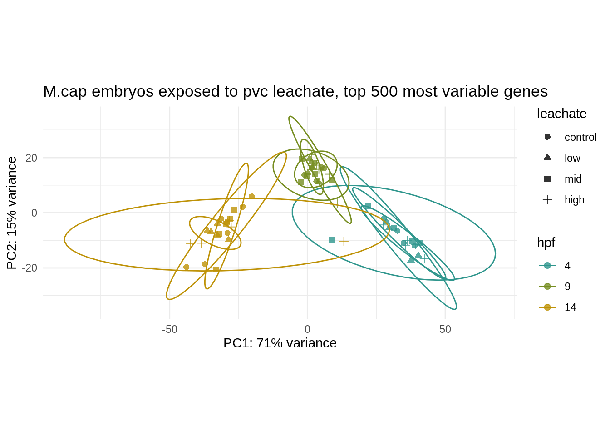
pca_500$label <- paste0("Sample: ", pca_500$sample_name,
"\nHPF: ", pca_500$hpf,
"\nLeachate: ", pca_500$leachate)
leachate_alpha_map <- c("control" = 0.3, "low" = 0.5, "mid" = 0.7, "high" = 1)
pca_500$alpha_val <- leachate_alpha_map[pca_500$leachate]# Original ggplot with a tooltip aesthetic
PCA_500 <- ggplot(pca_500, aes(PC1, PC2, color = hpf, label = name, alpha = alpha_val)) +
geom_point(shape = 21, size = 2) +
ggtitle("M.cap embryos exposed to pvc leachate, top 500 most variable genes") +
xlab(paste0("PC1: ", percentVar_500[1], "% variance")) +
ylab(paste0("PC2: ", percentVar_500[2], "% variance")) +
coord_fixed() +
scale_color_manual(values = hpf_colors) +
stat_ellipse() +
guides(alpha = "none") + # hide alpha legend (optional)
theme_minimal()
# Convert to interactive plot
ggplotly(PCA_500, tooltip = "label")4.2 Plot distribution
# Extract VST-transformed expression matrix
vsd_mat <- assay(vst(dds))
# Flatten it into a vector
vsd_vals <- as.vector(vsd_mat)
# Create a dataframe for ggplot
df_vsd <- data.frame(vsd_count = vsd_vals)
# Plot
ggplot(df_vsd, aes(x = vsd_count)) +
geom_histogram(fill = "grey") +
theme_classic() +
labs(
title = "Histogram of Variance-Stabilized Counts",
x = "VST-transformed read count",
y = "Frequency"
)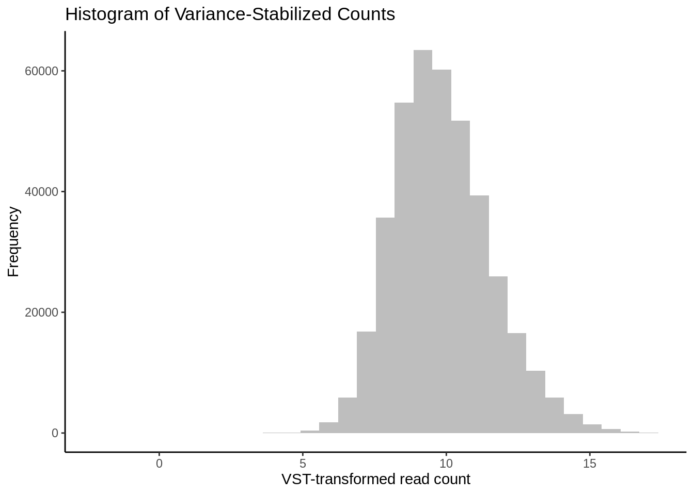
VST compresses the high-end of the count distribution and expands the low-end, making the variance roughly constant across the range. The resulting values are on an approximate log2 scale but not exact log2(count + 1) — VST is more nuanced, especially for low counts. A range of 5 to 15 corresponds roughly to raw counts ranging from 2³² to 2¹⁵ ≈ 32 to 32,000, so it’s realistic for RNA-seq gene expression data.
5 Run DESeq Test
This calculates the log2fold change between factors
dds <- DESeq(dds, test = "LRT", reduced = ~ hpf + leachate)This compares:
Full model: ~ hpf + leachate + hpf:leachate
Reduced model: ~ hpf + leachate
So it asks: Does including the interaction explain significantly more variation? If yes, then some genes respond to leachate differently at different hpf stages.
5.1 Plot dispersion
plotDispEsts(dds)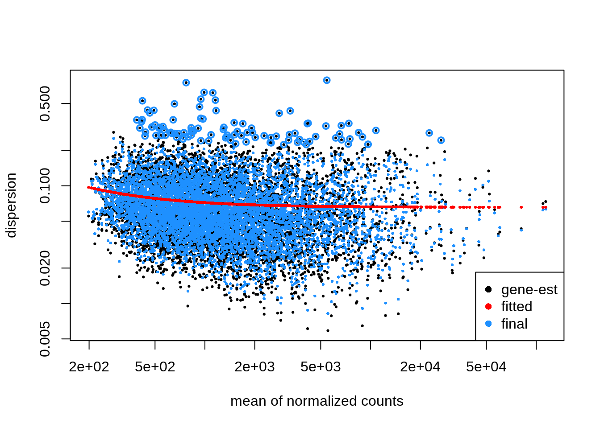
Note
Dispersion trend line is hovering around 0.1, and bulk spread of tag-wise gene estimates is from 0.02 to 0.5
6 Build contrasts
resultsNames(dds) # see what contrast names are available [1] "Intercept" "hpf_9_vs_4"
[3] "hpf_14_vs_4" "leachate_low_vs_control"
[5] "leachate_mid_vs_control" "leachate_high_vs_control"
[7] "hpf9.leachatelow" "hpf14.leachatelow"
[9] "hpf9.leachatemid" "hpf14.leachatemid"
[11] "hpf9.leachatehigh" "hpf14.leachatehigh" | Coef | Name | Meaning |
|---|---|---|
| 1 | "Intercept" |
Baseline expression: hpf = 4 and leachate = control |
| 2 | "hpf_9_vs_4" |
Change from 4 hpf → 9 hpf, at control exposure |
| 3 | "hpf_14_vs_4" |
Change from 4 hpf → 14 hpf, at control exposure |
| 4 | "leachate_low_vs_control" |
Change from control → low exposure, at 4 hpf |
| 5 | "leachate_mid_vs_control" |
Change from control → mid exposure, at 4 hpf |
| 6 | "leachate_high_vs_control" |
Change from control → high exposure, at 4 hpf |
| 7 | "hpf9.leachatelow" |
Interaction term: extra effect of low exposure at 9 hpf vs 4 hpf |
| 8 | "hpf14.leachatelow" |
Interaction term: extra effect of low exposure at 14 hpf vs 4 hpf |
| 9 | "hpf9.leachatemid" |
Interaction term: extra effect of mid exposure at 9 hpf vs 4 hpf |
| 10 | "hpf14.leachatemid" |
Interaction term: extra effect of mid exposure at 14 hpf vs 4 hpf |
| 11 | "hpf9.leachatehigh" |
Interaction term:… of high exposure at 9 hpf vs 4 hp |
| 12 | "hpf14.leachatehigh" |
Interaction term:… of high exposure at 14 hpf vs 4 hpf |
Contrast summary table | What you want | Contrast | | ————————- | —————————————————– | | High vs Control at 4 hpf | "leachate_high_vs_control" | | Mid vs Control at 4 hpf | "leachate_mid_vs_control" | | Low vs Control at 4 hpf | "leachate_low_vs_control" | | High vs Control at 9 hpf | c("leachate_high_vs_control", "hpf9.leachatehigh") | | Mid vs Control at 9 hpf | c("leachate_mid_vs_control", "hpf9.leachatemid") | | Low vs Control at 9 hpf | c("leachate_low_vs_control", "hpf9.leachatelow") | | High vs Control at 14 hpf | c("leachate_high_vs_control", "hpf14.leachatehigh") | | Mid vs Control at 14 hpf | c("leachate_mid_vs_control", "hpf14.leachatemid") | | Low vs Control at 14 hpf | c("leachate_low_vs_control", "hpf14.leachatelow") |
7 Effect of high exposure at 14 hpf
When you test for main effects of leachate (e.g., “leachate_high_vs_control”), it’s at the reference timepoint (hpf = 4). The interaction terms model how the leachate effect changes relative to that baseline as development progresses.
What’s the effect of high exposure at 14 hpf? You must combine: - “leachate_high_vs_control”: main leachate effect at 4 hpf - “hpf14.leachatehigh”: additional effect at 14 hpf
# output results of contrast
res_14hpf_high <- (results(dds, contrast = list(
c("leachate_high_vs_control", "hpf14.leachatehigh")
)))
summary(res_14hpf_high)
out of 6466 with nonzero total read count
adjusted p-value < 0.1
LFC > 0 (up) : 0, 0%
LFC < 0 (down) : 0, 0%
outliers [1] : 0, 0%
low counts [2] : 0, 0%
(mean count < 199)
[1] see 'cooksCutoff' argument of ?results
[2] see 'independentFiltering' argument of ?results7.0.1 Extract significant genes
padj.cutoff <- 0.05
lfc.cutoff <- 0.5# Convert results table into tibble
res_14hpf_high_tb <- res_14hpf_high %>%
data.frame() %>%
rownames_to_column(var="gene") %>%
as_tibble()
# subset that table to only keep the significant genes using our pre-defined thresholds:
sig_14hpf_high_noLFCcutoff <- res_14hpf_high_tb %>%
filter(padj < padj.cutoff)
sig_14hpf_high <- sig_14hpf_high_noLFCcutoff %>%
filter(abs(log2FoldChange) > lfc.cutoff)paste("Number of significant DEGs 14 hpf at high exposure level:", nrow(sig_14hpf_high_noLFCcutoff), "(padj<", padj.cutoff, ")")[1] "Number of significant DEGs 14 hpf at high exposure level: 0 (padj< 0.05 )"paste("Number of significant DEGs 14 hpf at high exposure level:", nrow(sig_14hpf_high), "(padj<", padj.cutoff, ", log-fold change >", lfc.cutoff, ")")[1] "Number of significant DEGs 14 hpf at high exposure level: 0 (padj< 0.05 , log-fold change > 0.5 )"write_csv(sig_14hpf_high, "../output/09_deg_multifactorial/sig_14hpf_high.csv")
write_csv(sig_14hpf_high_noLFCcutoff, "../output/09_deg_multifactorial/sig_14hpf_high_noLFCcutoff.csv")7.0.2 Volcano plots
# shrink lfc for visualizations
res_14hpf_high_ashr <- lfcShrink(dds, contrast = list(c("leachate_high_vs_control", "hpf14.leachatehigh")), type = "ashr")
plotMA(res_14hpf_high)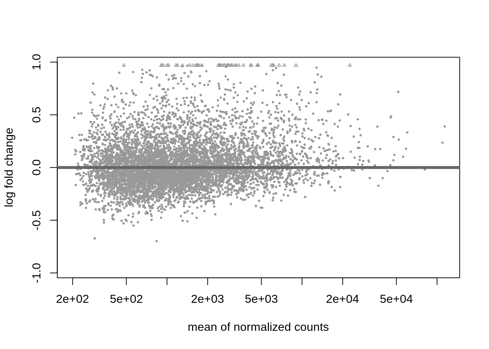
plotMA(res_14hpf_high_ashr)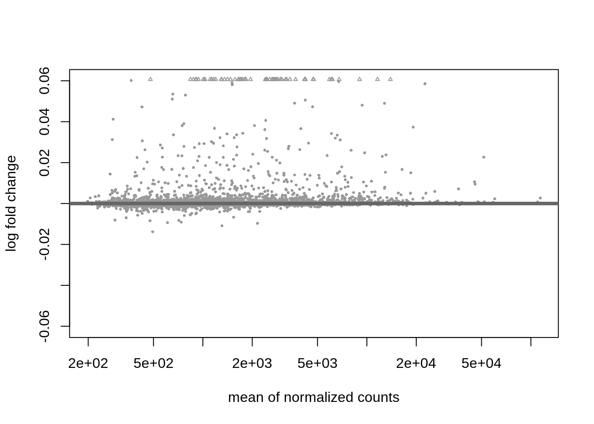
EnhancedVolcano(res_14hpf_high,
lab = rownames(res_14hpf_high),
x = 'log2FoldChange',
y = 'padj', # or 'padj' for adjusted p-values
pCutoff = 0.05,
FCcutoff = 0.5,
title = 'Volcano plot',
subtitle = 'Effect of high exposure at 14 hpf',
pointSize = 1.0,
labSize = 3.0,
col = c('grey30', 'forestgreen', 'royalblue', 'red2')
)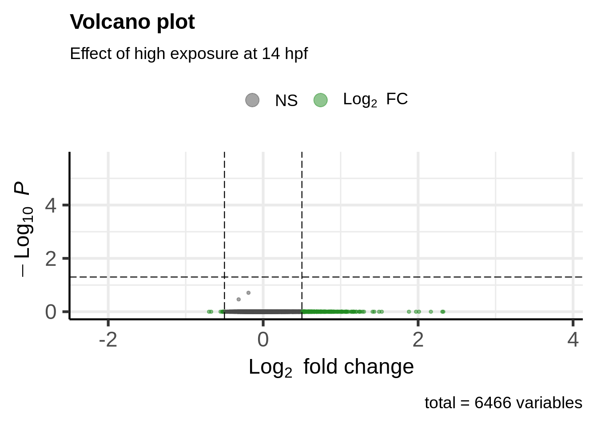
v14high <-
ggplot(res_14hpf_high) +
# Plot all
geom_point(aes(x=log2FoldChange, y=-log10(padj),color="unchanged"),
size=.5) +
# Overlay all significantly upregulated in red
geom_point(data = sig_14hpf_high[sig_14hpf_high$log2FoldChange > 0, ],
aes(x=log2FoldChange, y=-log10(padj), color="upregulated"),
size=.5) +
# Overlay all significantly downregulated in blue
geom_point(data = sig_14hpf_high[sig_14hpf_high$log2FoldChange < 0, ],
aes(x=log2FoldChange, y=-log10(padj), color="downregulated"),
size=.5) +
ggtitle("Effect of high leachate exposure at 14 hpf") +
xlab("log2 fold change") +
ylab("-log10 adjusted p-value") +
scale_x_continuous(limits = c(-2,2)) +
scale_y_continuous(limits = c(0,100)) +
scale_color_manual(values = c("unchanged" = "darkgrey", "upregulated" = "red", "downregulated" = "blue"),
labels = c("unchanged" = "Unchanged", "upregulated" = "Upregulated", "downregulated" = "Downregulated"),
name = NULL) +
theme(legend.position = "top",
plot.title = element_text(size = rel(1.5), hjust = 0.5),
axis.title = element_text(size = rel(1.25)))
v14high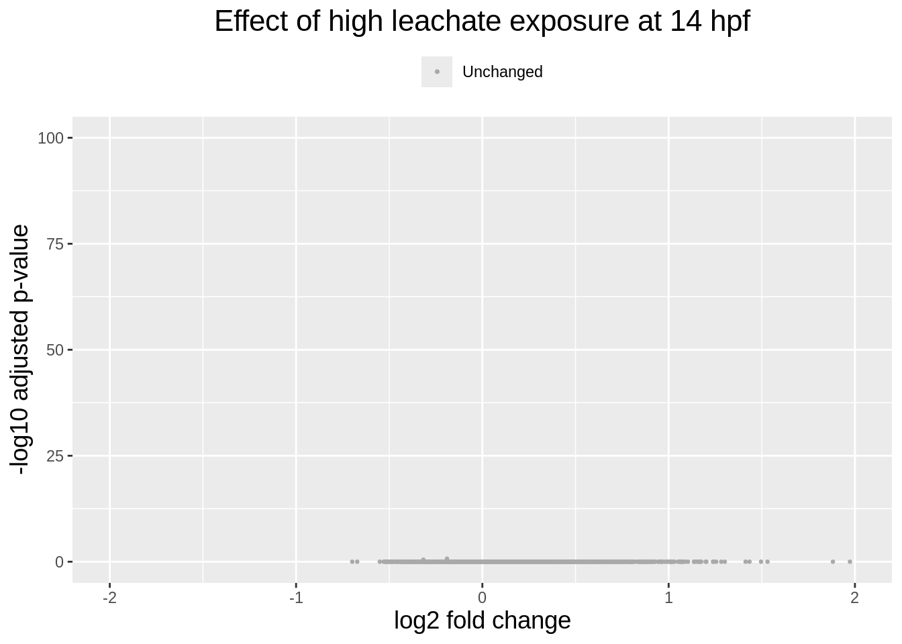
7.1 Effect of mid exposure at 14 hpf
# output results of contrast
res_14hpf_mid <- (results(dds, contrast = list(
c("leachate_mid_vs_control", "hpf14.leachatemid")
)))
summary(res_14hpf_mid)
out of 6466 with nonzero total read count
adjusted p-value < 0.1
LFC > 0 (up) : 0, 0%
LFC < 0 (down) : 0, 0%
outliers [1] : 0, 0%
low counts [2] : 0, 0%
(mean count < 199)
[1] see 'cooksCutoff' argument of ?results
[2] see 'independentFiltering' argument of ?results7.1.1 Extract significant genes
# Convert results table into tibble
res_14hpf_mid_tb <- res_14hpf_mid %>%
data.frame() %>%
rownames_to_column(var="gene") %>%
as_tibble()
# subset that table to only keep the significant genes using our pre-defined thresholds:
sig_14hpf_mid_noLFCcutoff <- res_14hpf_mid_tb %>%
filter(padj < padj.cutoff)
sig_14hpf_mid <- sig_14hpf_mid_noLFCcutoff %>%
filter(abs(log2FoldChange) > lfc.cutoff)paste("Number of significant DEGs 14 hpf at mid exposure level:", nrow(sig_14hpf_mid_noLFCcutoff), "(padj<", padj.cutoff, ")")[1] "Number of significant DEGs 14 hpf at mid exposure level: 0 (padj< 0.05 )"paste("Number of significant DEGs 14 hpf at mid exposure level:", nrow(sig_14hpf_mid), "(padj<", padj.cutoff, ", log-fold change >", lfc.cutoff, ")")[1] "Number of significant DEGs 14 hpf at mid exposure level: 0 (padj< 0.05 , log-fold change > 0.5 )"write_csv(sig_14hpf_mid, "../output/09_deg_multifactorial/sig_14hpf_mid.csv")
write_csv(sig_14hpf_mid_noLFCcutoff, "../output/09_deg_multifactorial/sig_14hpf_mid_noLFCcutoff.csv")7.1.2 Volcano plots
# shrink lfc for visualizations
res_14hpf_mid_ashr <- lfcShrink(dds, contrast = list(c("leachate_mid_vs_control", "hpf14.leachatemid")), type = "ashr")
plotMA(res_14hpf_mid)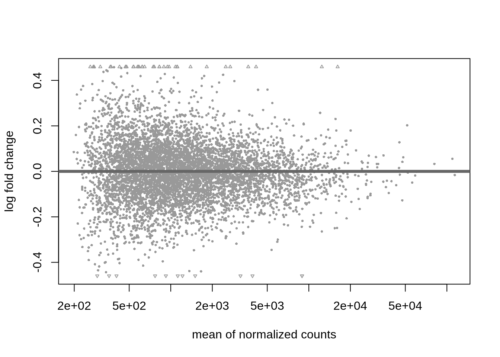
plotMA(res_14hpf_mid_ashr)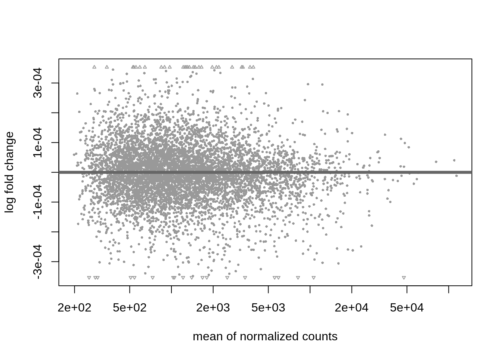
EnhancedVolcano(res_14hpf_mid,
lab = rownames(res_14hpf_mid),
x = 'log2FoldChange',
y = 'padj', # or 'padj' for adjusted p-values
pCutoff = 0.05,
FCcutoff = 0.5,
title = 'Volcano plot',
subtitle = 'Effect of mid exposure at 14 hpf',
pointSize = 1.0,
labSize = 3.0,
col = c('grey30', 'forestgreen', 'royalblue', 'red2')
)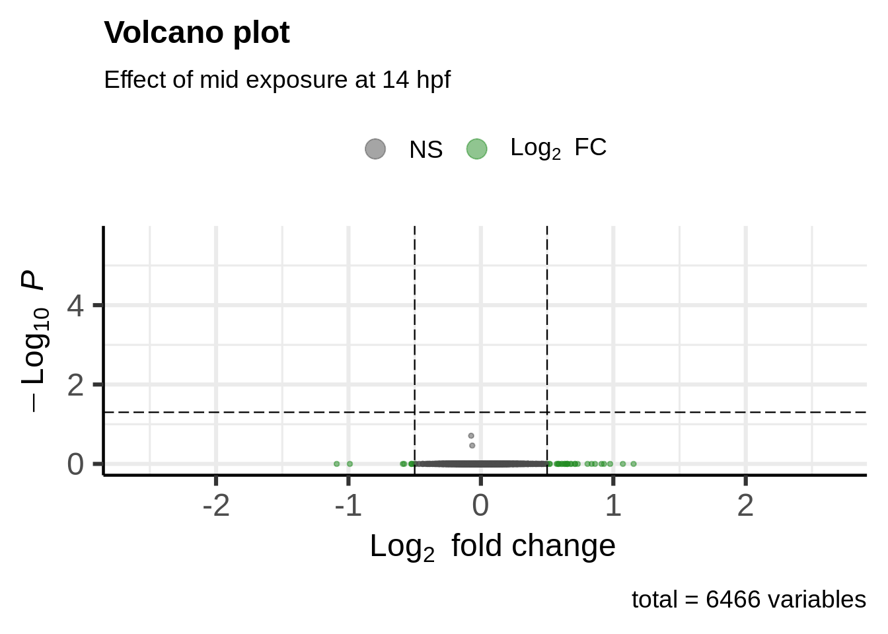
v14mid <-
ggplot(res_14hpf_mid) +
# Plot all
geom_point(aes(x=log2FoldChange, y=-log10(padj),color="unchanged"),
size=.5) +
# Overlay all significantly upregulated in red
geom_point(data = sig_14hpf_mid[sig_14hpf_mid$log2FoldChange > 0, ],
aes(x=log2FoldChange, y=-log10(padj), color="upregulated"),
size=.5) +
# Overlay all significantly downregulated in blue
geom_point(data = sig_14hpf_mid[sig_14hpf_mid$log2FoldChange < 0, ],
aes(x=log2FoldChange, y=-log10(padj), color="downregulated"),
size=.5) +
ggtitle("Effect of mid leachate exposure at 14 hpf") +
xlab("log2 fold change") +
ylab("-log10 adjusted p-value") +
scale_x_continuous(limits = c(-2,2)) +
scale_y_continuous(limits = c(0,100)) +
scale_color_manual(values = c("unchanged" = "darkgrey", "upregulated" = "red", "downregulated" = "blue"),
labels = c("unchanged" = "Unchanged", "upregulated" = "Upregulated", "downregulated" = "Downregulated"),
name = NULL) +
theme(legend.position = "top",
plot.title = element_text(size = rel(1.5), hjust = 0.5),
axis.title = element_text(size = rel(1.25)))
v14mid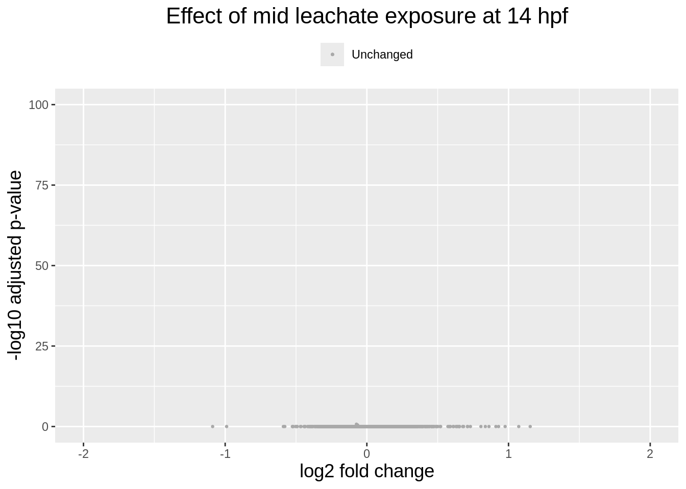
7.2 Effect of low exposure at 14 hpf
# output results of contrast
res_14hpf_low <- (results(dds, contrast = list(
c("leachate_low_vs_control", "hpf14.leachatelow")
)))
summary(res_14hpf_low)
out of 6466 with nonzero total read count
adjusted p-value < 0.1
LFC > 0 (up) : 0, 0%
LFC < 0 (down) : 0, 0%
outliers [1] : 0, 0%
low counts [2] : 0, 0%
(mean count < 199)
[1] see 'cooksCutoff' argument of ?results
[2] see 'independentFiltering' argument of ?results7.2.1 Extract significant genes
# Convert results table into tibble
res_14hpf_low_tb <- res_14hpf_low %>%
data.frame() %>%
rownames_to_column(var="gene") %>%
as_tibble()
# subset that table to only keep the significant genes using our pre-defined thresholds:
sig_14hpf_low_noLFCcutoff <- res_14hpf_low_tb %>%
filter(padj < padj.cutoff)
sig_14hpf_low <- sig_14hpf_low_noLFCcutoff %>%
filter(abs(log2FoldChange) > lfc.cutoff)paste("Number of significant DEGs 14 hpf at low exposure level:", nrow(sig_14hpf_low_noLFCcutoff), "(padj<", padj.cutoff, ")")[1] "Number of significant DEGs 14 hpf at low exposure level: 0 (padj< 0.05 )"paste("Number of significant DEGs 14 hpf at low exposure level:", nrow(sig_14hpf_low), "(padj<", padj.cutoff, ", log-fold change >", lfc.cutoff, ")")[1] "Number of significant DEGs 14 hpf at low exposure level: 0 (padj< 0.05 , log-fold change > 0.5 )"write_csv(sig_14hpf_low, "../output/09_deg_multifactorial/sig_14hpf_low.csv")
write_csv(sig_14hpf_low_noLFCcutoff, "../output/09_deg_multifactorial/sig_14hpf_low_noLFCcutoff.csv")7.2.2 Volcano plots
# shrink lfc for visualizations
res_14hpf_low_ashr <- lfcShrink(dds, contrast = list(c("leachate_low_vs_control", "hpf14.leachatelow")), type = "ashr")
plotMA(res_14hpf_low)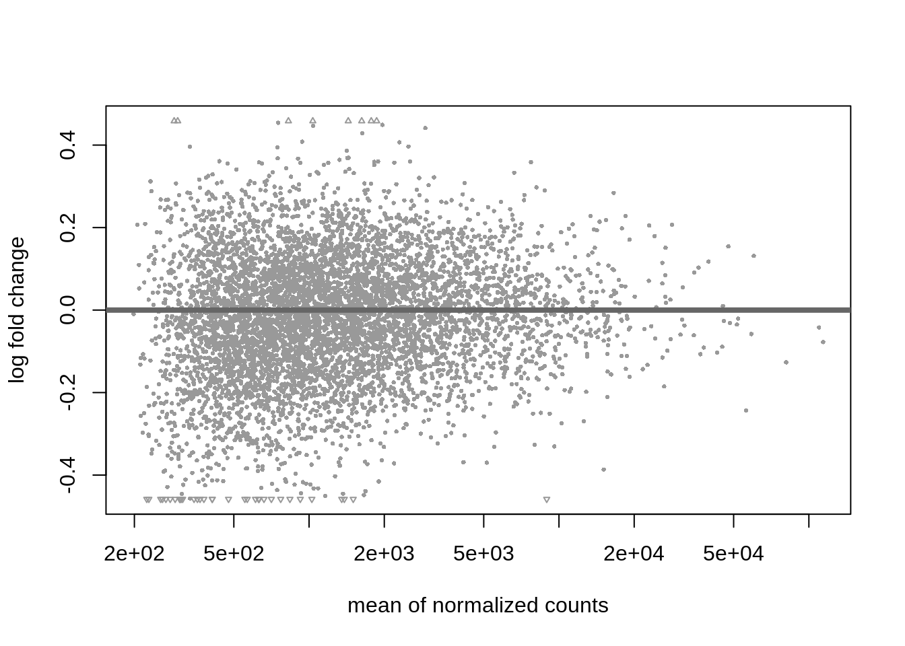
plotMA(res_14hpf_low_ashr)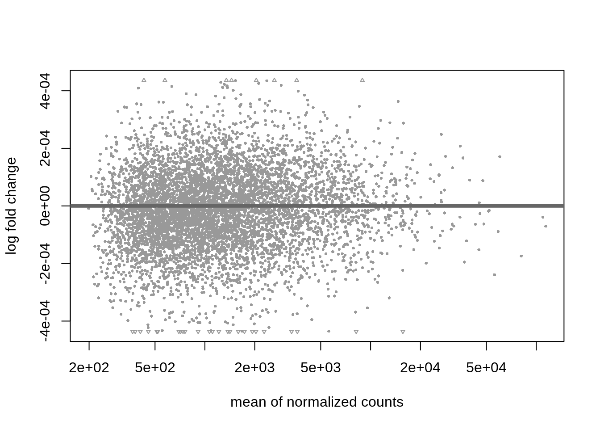
EnhancedVolcano(res_14hpf_low,
lab = rownames(res_14hpf_low),
x = 'log2FoldChange',
y = 'padj', # or 'padj' for adjusted p-values
pCutoff = 0.05,
FCcutoff = 0.5,
title = 'Volcano plot',
subtitle = 'Effect of low exposure at 14 hpf',
pointSize = 1.0,
labSize = 3.0,
col = c('grey30', 'forestgreen', 'royalblue', 'red2')
)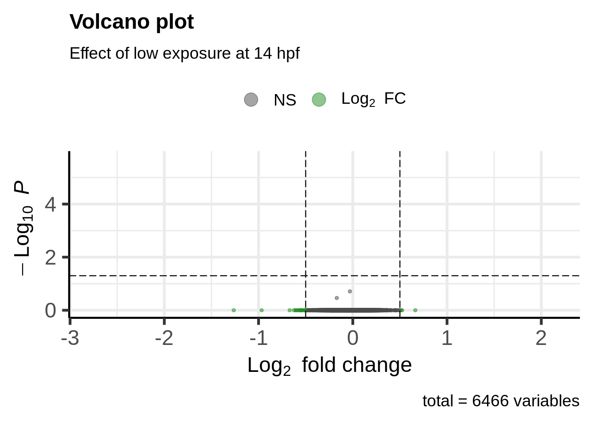
v14low <-
ggplot(res_14hpf_low) +
# Plot all
geom_point(aes(x=log2FoldChange, y=-log10(padj),color="unchanged"),
size=.5) +
# Overlay all significantly upregulated in red
geom_point(data = sig_14hpf_low[sig_14hpf_low$log2FoldChange > 0, ],
aes(x=log2FoldChange, y=-log10(padj), color="upregulated"),
size=.5) +
# Overlay all significantly downregulated in blue
geom_point(data = sig_14hpf_low[sig_14hpf_low$log2FoldChange < 0, ],
aes(x=log2FoldChange, y=-log10(padj), color="downregulated"),
size=.5) +
ggtitle("Effect of low leachate exposure at 14 hpf") +
xlab("log2 fold change") +
ylab("-log10 adjusted p-value") +
scale_x_continuous(limits = c(-2,2)) +
scale_y_continuous(limits = c(0,100)) +
scale_color_manual(values = c("unchanged" = "darkgrey", "upregulated" = "red", "downregulated" = "blue"),
labels = c("unchanged" = "Unchanged", "upregulated" = "Upregulated", "downregulated" = "Downregulated"),
name = NULL) +
theme(legend.position = "top",
plot.title = element_text(size = rel(1.5), hjust = 0.5),
axis.title = element_text(size = rel(1.25)))
v14low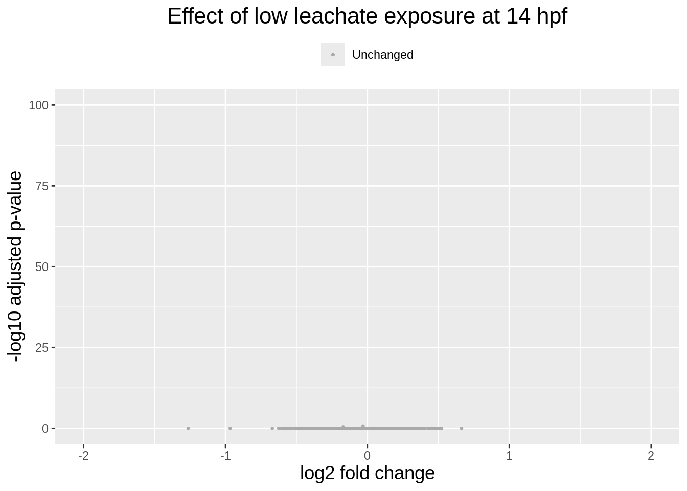
7.3 Effect of high exposure at 9 hpf
# output results of contrast
res_9hpf_high <- (results(dds, contrast = list(
c("leachate_high_vs_control", "hpf9.leachatehigh")
)))
summary(res_9hpf_high)
out of 6466 with nonzero total read count
adjusted p-value < 0.1
LFC > 0 (up) : 0, 0%
LFC < 0 (down) : 0, 0%
outliers [1] : 0, 0%
low counts [2] : 0, 0%
(mean count < 199)
[1] see 'cooksCutoff' argument of ?results
[2] see 'independentFiltering' argument of ?results7.3.1 Extract significant genes
# Convert results table into tibble
res_9hpf_high_tb <- res_9hpf_high %>%
data.frame() %>%
rownames_to_column(var="gene") %>%
as_tibble()
# subset that table to only keep the significant genes using our pre-defined thresholds:
sig_9hpf_high_noLFCcutoff <- res_9hpf_high_tb %>%
filter(padj < padj.cutoff)
sig_9hpf_high <- sig_9hpf_high_noLFCcutoff %>%
filter(abs(log2FoldChange) > lfc.cutoff)paste("Number of significant DEGs 9 hpf at high exposure level:", nrow(sig_9hpf_high_noLFCcutoff), "(padj<", padj.cutoff, ")")[1] "Number of significant DEGs 9 hpf at high exposure level: 0 (padj< 0.05 )"paste("Number of significant DEGs 9 hpf at high exposure level:", nrow(sig_9hpf_high), "(padj<", padj.cutoff, ", log-fold change >", lfc.cutoff, ")")[1] "Number of significant DEGs 9 hpf at high exposure level: 0 (padj< 0.05 , log-fold change > 0.5 )"write_csv(sig_9hpf_high, "../output/09_deg_multifactorial/sig_9hpf_high.csv")
write_csv(sig_9hpf_high_noLFCcutoff, "../output/09_deg_multifactorial/sig_9hpf_high_noLFCcutoff.csv")7.3.2 Volcano plots
# shrink lfc for visualizations
res_9hpf_high_ashr <- lfcShrink(dds, contrast = list(c("leachate_high_vs_control", "hpf9.leachatehigh")), type = "ashr")
plotMA(res_9hpf_high)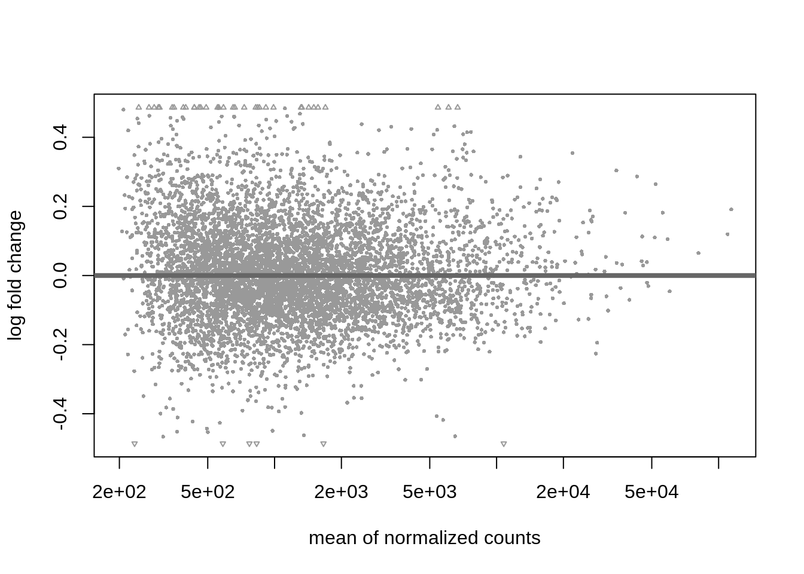
plotMA(res_9hpf_high_ashr)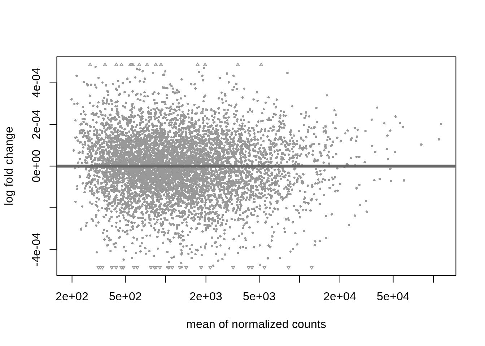
EnhancedVolcano(res_9hpf_high,
lab = rownames(res_9hpf_high),
x = 'log2FoldChange',
y = 'padj', # or 'padj' for adjusted p-values
pCutoff = 0.05,
FCcutoff = 0.5,
title = 'Volcano plot',
subtitle = 'Effect of high exposure at 9 hpf',
pointSize = 1.0,
labSize = 3.0,
col = c('grey30', 'forestgreen', 'royalblue', 'red2')
)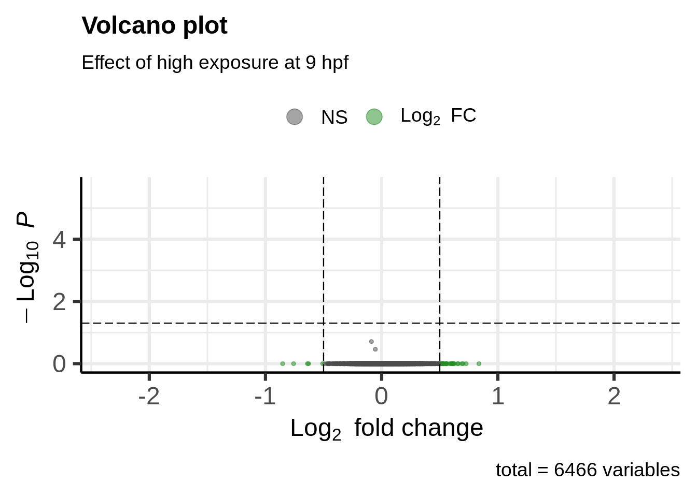
v9high <-
ggplot(res_9hpf_high) +
# Plot all
geom_point(aes(x=log2FoldChange, y=-log10(padj),color="unchanged"),
size=.5) +
# Overlay all significantly upregulated in red
geom_point(data = sig_9hpf_high[sig_9hpf_high$log2FoldChange > 0, ],
aes(x=log2FoldChange, y=-log10(padj), color="upregulated"),
size=.5) +
# Overlay all significantly downregulated in blue
geom_point(data = sig_9hpf_high[sig_9hpf_high$log2FoldChange < 0, ],
aes(x=log2FoldChange, y=-log10(padj), color="downregulated"),
size=.5) +
ggtitle("Effect of high leachate exposure at 9 hpf") +
xlab("log2 fold change") +
ylab("-log10 adjusted p-value") +
scale_x_continuous(limits = c(-2,2)) +
scale_y_continuous(limits = c(0,100)) +
scale_color_manual(values = c("unchanged" = "darkgrey", "upregulated" = "red", "downregulated" = "blue"),
labels = c("unchanged" = "Unchanged", "upregulated" = "Upregulated", "downregulated" = "Downregulated"),
name = NULL) +
theme(legend.position = "top",
plot.title = element_text(size = rel(1.5), hjust = 0.5),
axis.title = element_text(size = rel(1.25)))
v9high7.4 Effect of mid exposure at 9 hpf
# output results of contrast
res_9hpf_mid <- (results(dds, contrast = list(
c("leachate_mid_vs_control", "hpf9.leachatemid")
)))
summary(res_9hpf_mid)
out of 6466 with nonzero total read count
adjusted p-value < 0.1
LFC > 0 (up) : 0, 0%
LFC < 0 (down) : 0, 0%
outliers [1] : 0, 0%
low counts [2] : 0, 0%
(mean count < 199)
[1] see 'cooksCutoff' argument of ?results
[2] see 'independentFiltering' argument of ?results7.4.1 Extract significant genes
# Convert results table into tibble
res_9hpf_mid_tb <- res_9hpf_mid %>%
data.frame() %>%
rownames_to_column(var="gene") %>%
as_tibble()
# subset that table to only keep the significant genes using our pre-defined thresholds:
sig_9hpf_mid_noLFCcutoff <- res_9hpf_mid_tb %>%
filter(padj < padj.cutoff)
sig_9hpf_mid <- sig_9hpf_mid_noLFCcutoff %>%
filter(abs(log2FoldChange) > lfc.cutoff)paste("Number of significant DEGs 9 hpf at mid exposure level:", nrow(sig_9hpf_mid_noLFCcutoff), "(padj<", padj.cutoff, ")")[1] "Number of significant DEGs 9 hpf at mid exposure level: 0 (padj< 0.05 )"paste("Number of significant DEGs 9 hpf at mid exposure level:", nrow(sig_9hpf_mid), "(padj<", padj.cutoff, ", log-fold change >", lfc.cutoff, ")")[1] "Number of significant DEGs 9 hpf at mid exposure level: 0 (padj< 0.05 , log-fold change > 0.5 )"write_csv(sig_9hpf_mid, "../output/09_deg_multifactorial/sig_9hpf_mid.csv")
write_csv(sig_9hpf_mid_noLFCcutoff, "../output/09_deg_multifactorial/sig_9hpf_mid_noLFCcutoff.csv")7.4.2 Volcano plots
# shrink lfc for visualizations
res_9hpf_mid_ashr <- lfcShrink(dds, contrast = list(c("leachate_mid_vs_control", "hpf9.leachatemid")), type = "ashr")
plotMA(res_9hpf_mid)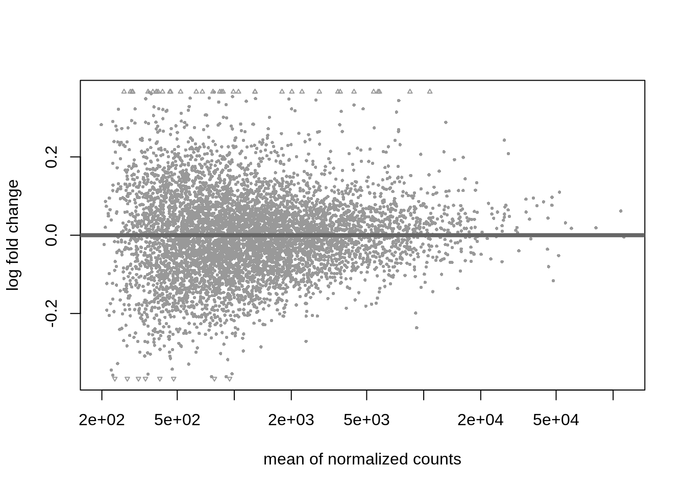
plotMA(res_9hpf_mid_ashr)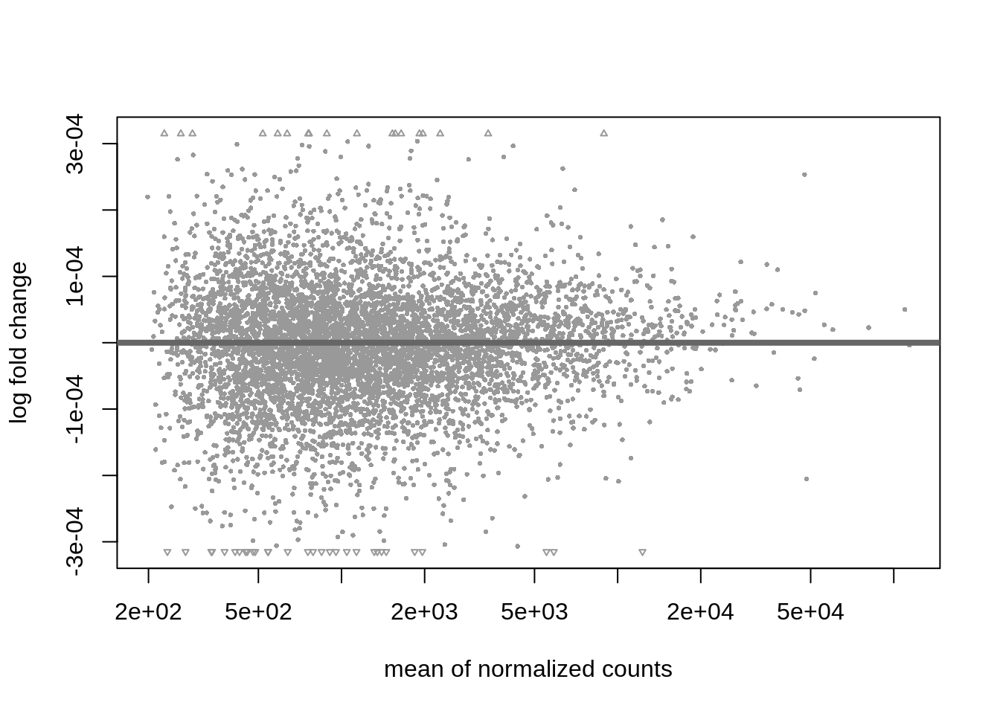
EnhancedVolcano(res_9hpf_mid,
lab = rownames(res_9hpf_mid),
x = 'log2FoldChange',
y = 'padj', # or 'padj' for adjusted p-values
pCutoff = 0.05,
FCcutoff = 0.5,
title = 'Volcano plot',
subtitle = 'Effect of mid exposure at 9 hpf',
pointSize = 1.0,
labSize = 3.0,
col = c('grey30', 'forestgreen', 'royalblue', 'red2')
)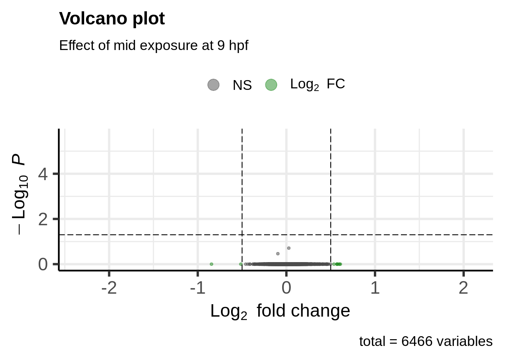
v9mid <-
ggplot(res_9hpf_mid) +
# Plot all
geom_point(aes(x=log2FoldChange, y=-log10(padj),color="unchanged"),
size=.5) +
# Overlay all significantly upregulated in red
geom_point(data = sig_9hpf_mid[sig_9hpf_mid$log2FoldChange > 0, ],
aes(x=log2FoldChange, y=-log10(padj), color="upregulated"),
size=.5) +
# Overlay all significantly downregulated in blue
geom_point(data = sig_9hpf_mid[sig_9hpf_mid$log2FoldChange < 0, ],
aes(x=log2FoldChange, y=-log10(padj), color="downregulated"),
size=.5) +
ggtitle("Effect of mid leachate exposure at 9 hpf") +
xlab("log2 fold change") +
ylab("-log10 adjusted p-value") +
scale_x_continuous(limits = c(-2,2)) +
scale_y_continuous(limits = c(0,100)) +
scale_color_manual(values = c("unchanged" = "darkgrey", "upregulated" = "red", "downregulated" = "blue"),
labels = c("unchanged" = "Unchanged", "upregulated" = "Upregulated", "downregulated" = "Downregulated"),
name = NULL) +
theme(legend.position = "top",
plot.title = element_text(size = rel(1.5), hjust = 0.5),
axis.title = element_text(size = rel(1.25)))
v9mid7.5 Effect of low exposure at 9 hpf
# output results of contrast
res_9hpf_low <- (results(dds, contrast = list(
c("leachate_low_vs_control", "hpf9.leachatelow")
)))
summary(res_9hpf_low)
out of 6466 with nonzero total read count
adjusted p-value < 0.1
LFC > 0 (up) : 0, 0%
LFC < 0 (down) : 0, 0%
outliers [1] : 0, 0%
low counts [2] : 0, 0%
(mean count < 199)
[1] see 'cooksCutoff' argument of ?results
[2] see 'independentFiltering' argument of ?results7.5.1 Extract significant genes
# Convert results table into tibble
res_9hpf_low_tb <- res_9hpf_low %>%
data.frame() %>%
rownames_to_column(var="gene") %>%
as_tibble()
# subset that table to only keep the significant genes using our pre-defined thresholds:
sig_9hpf_low_noLFCcutoff <- res_9hpf_low_tb %>%
filter(padj < padj.cutoff)
sig_9hpf_low <- sig_9hpf_low_noLFCcutoff %>%
filter(abs(log2FoldChange) > lfc.cutoff)paste("Number of significant DEGs 9 hpf at low exposure level:", nrow(sig_9hpf_low_noLFCcutoff), "(padj<", padj.cutoff, ")")[1] "Number of significant DEGs 9 hpf at low exposure level: 0 (padj< 0.05 )"paste("Number of significant DEGs 9 hpf at low exposure level:", nrow(sig_9hpf_low), "(padj<", padj.cutoff, ", log-fold change >", lfc.cutoff, ")")[1] "Number of significant DEGs 9 hpf at low exposure level: 0 (padj< 0.05 , log-fold change > 0.5 )"write_csv(sig_9hpf_low, "../output/09_deg_multifactorial/sig_9hpf_low.csv")
write_csv(sig_9hpf_low_noLFCcutoff, "../output/09_deg_multifactorial/sig_9hpf_low_noLFCcutoff.csv")7.5.2 Volcano plots
# shrink lfc for visualizations
res_9hpf_low_ashr <- lfcShrink(dds, contrast = list(c("leachate_low_vs_control", "hpf9.leachatelow")), type = "ashr")
plotMA(res_9hpf_low)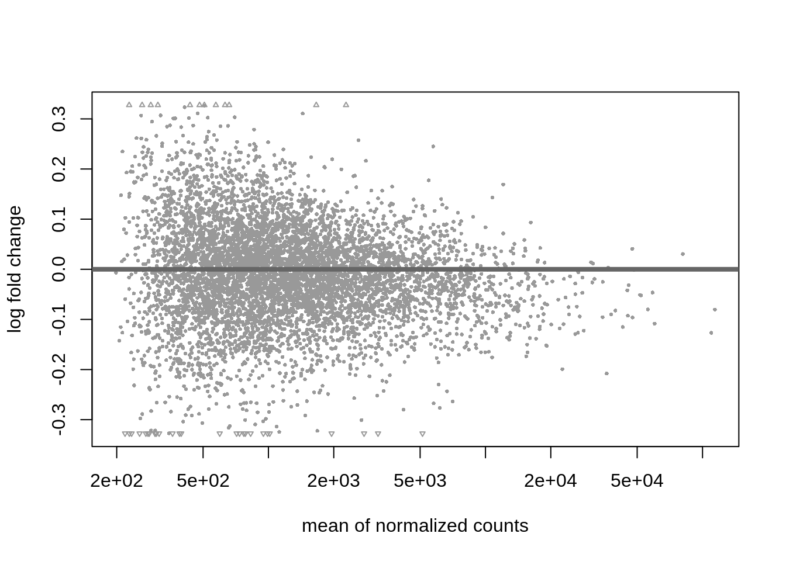
plotMA(res_9hpf_low_ashr)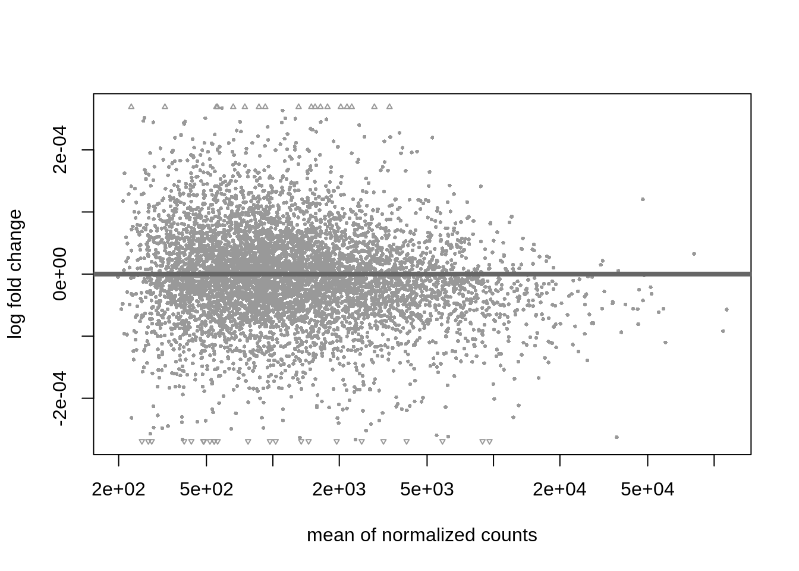
EnhancedVolcano(res_9hpf_low,
lab = rownames(res_9hpf_low),
x = 'log2FoldChange',
y = 'padj', # or 'padj' for adjusted p-values
pCutoff = 0.05,
FCcutoff = 0.5,
title = 'Volcano plot',
subtitle = 'Effect of low exposure at 9 hpf',
pointSize = 1.0,
labSize = 3.0,
col = c('grey30', 'forestgreen', 'royalblue', 'red2')
)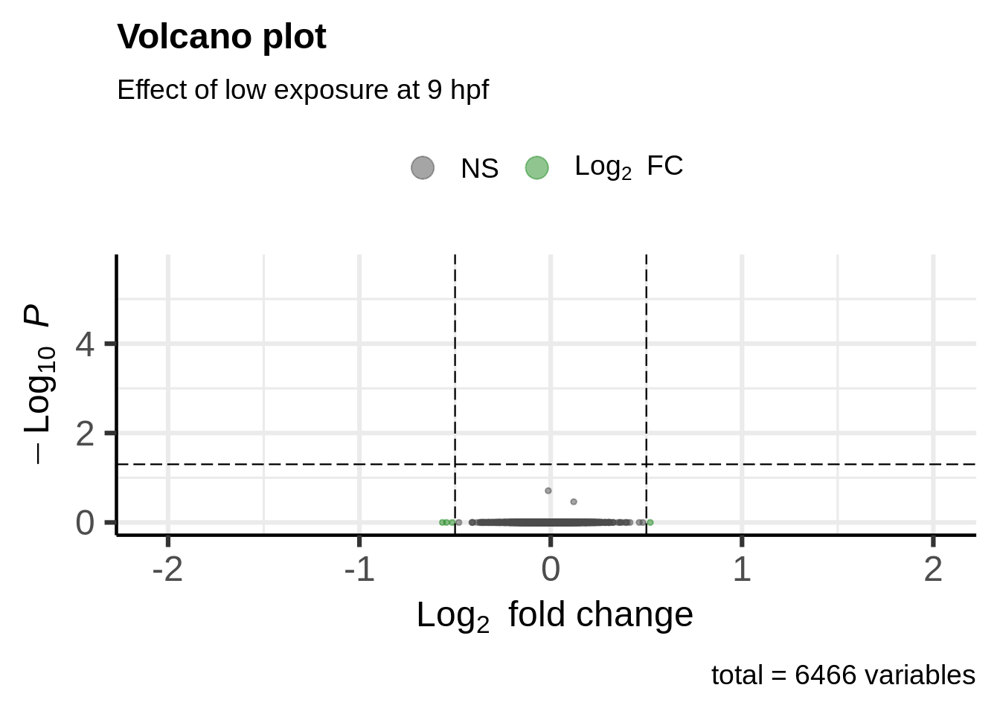
v9low <-
ggplot(res_9hpf_low) +
# Plot all
geom_point(aes(x=log2FoldChange, y=-log10(padj),color="unchanged"),
size=.5) +
# Overlay all significantly upregulated in red
geom_point(data = sig_9hpf_low[sig_9hpf_low$log2FoldChange > 0, ],
aes(x=log2FoldChange, y=-log10(padj), color="upregulated"),
size=.5) +
# Overlay all significantly downregulated in blue
geom_point(data = sig_9hpf_low[sig_9hpf_low$log2FoldChange < 0, ],
aes(x=log2FoldChange, y=-log10(padj), color="downregulated"),
size=.5) +
ggtitle("Effect of low leachate exposure at 9 hpf") +
xlab("log2 fold change") +
ylab("-log10 adjusted p-value") +
scale_x_continuous(limits = c(-2,2)) +
scale_y_continuous(limits = c(0,100)) +
scale_color_manual(values = c("unchanged" = "darkgrey", "upregulated" = "red", "downregulated" = "blue"),
labels = c("unchanged" = "Unchanged", "upregulated" = "Upregulated", "downregulated" = "Downregulated"),
name = NULL) +
theme(legend.position = "top",
plot.title = element_text(size = rel(1.5), hjust = 0.5),
axis.title = element_text(size = rel(1.25)))
v9low7.6 Effect of high exposure at 4 hpf
# output results of contrast
res_4hpf_high <- (results(dds, name = "leachate_high_vs_control")
)
summary(res_4hpf_high)
out of 6466 with nonzero total read count
adjusted p-value < 0.1
LFC > 0 (up) : 0, 0%
LFC < 0 (down) : 0, 0%
outliers [1] : 0, 0%
low counts [2] : 0, 0%
(mean count < 199)
[1] see 'cooksCutoff' argument of ?results
[2] see 'independentFiltering' argument of ?results7.6.1 Extract significant genes
# Convert results table into tibble
res_4hpf_high_tb <- res_4hpf_high %>%
data.frame() %>%
rownames_to_column(var="gene") %>%
as_tibble()
# subset that table to only keep the significant genes using our pre-defined thresholds:
sig_4hpf_high_noLFCcutoff <- res_4hpf_high_tb %>%
filter(padj < padj.cutoff)
sig_4hpf_high <- sig_4hpf_high_noLFCcutoff %>%
filter(abs(log2FoldChange) > lfc.cutoff)paste("Number of significant DEGs 4 hpf at high exposure level:", nrow(sig_4hpf_high_noLFCcutoff), "(padj<", padj.cutoff, ")")[1] "Number of significant DEGs 4 hpf at high exposure level: 0 (padj< 0.05 )"paste("Number of significant DEGs 4 hpf at high exposure level:", nrow(sig_4hpf_high), "(padj<", padj.cutoff, ", log-fold change >", lfc.cutoff, ")")[1] "Number of significant DEGs 4 hpf at high exposure level: 0 (padj< 0.05 , log-fold change > 0.5 )"write_csv(sig_4hpf_high, "../output/09_deg_multifactorial/sig_4hpf_high.csv")
write_csv(sig_4hpf_high_noLFCcutoff, "../output/09_deg_multifactorial/sig_4hpf_high_noLFCcutoff.csv")7.6.2 Volcano plots
# shrink lfc for visualizations
res_4hpf_high_ashr <- lfcShrink(dds, coef = 6 , type = "ashr")
plotMA(res_4hpf_high)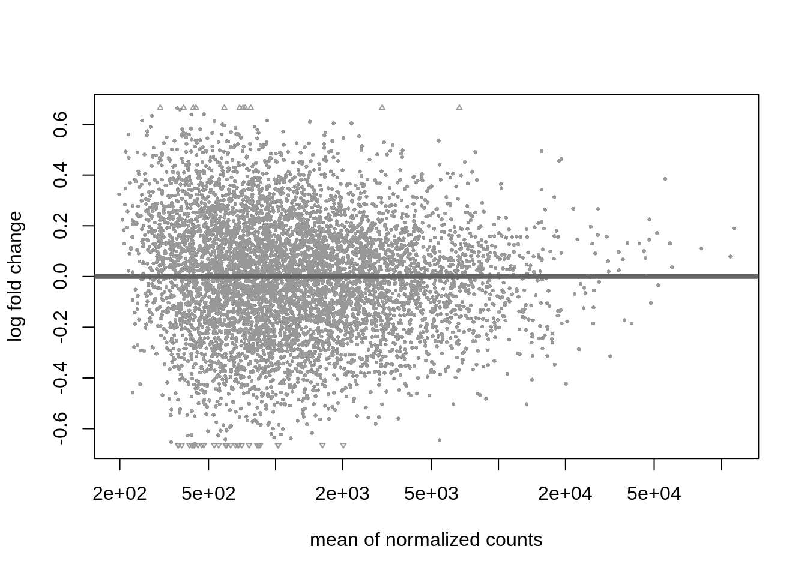
plotMA(res_4hpf_high_ashr)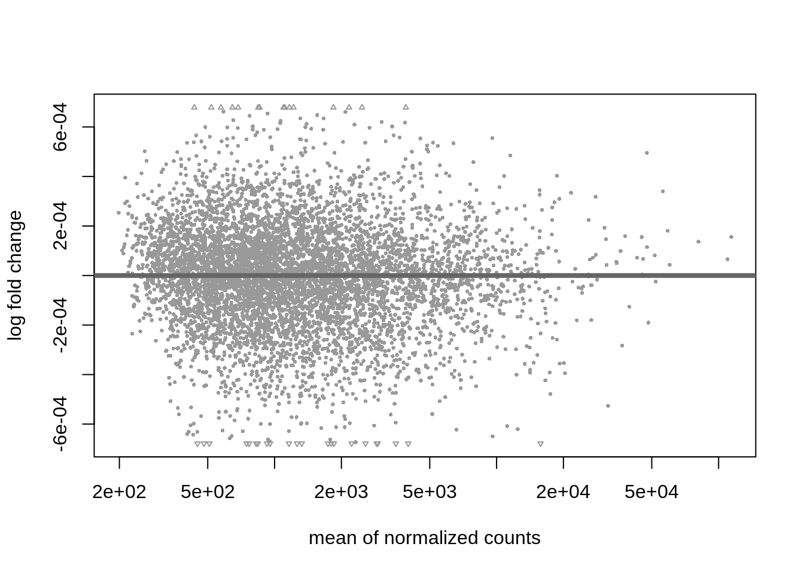
EnhancedVolcano(res_4hpf_high,
lab = rownames(res_4hpf_high),
x = 'log2FoldChange',
y = 'padj', # or 'padj' for adjusted p-values
pCutoff = 0.05,
FCcutoff = 0.5,
title = 'Volcano plot',
subtitle = 'Effect of high exposure at 4 hpf',
pointSize = 1.0,
labSize = 3.0,
col = c('grey30', 'forestgreen', 'royalblue', 'red2')
)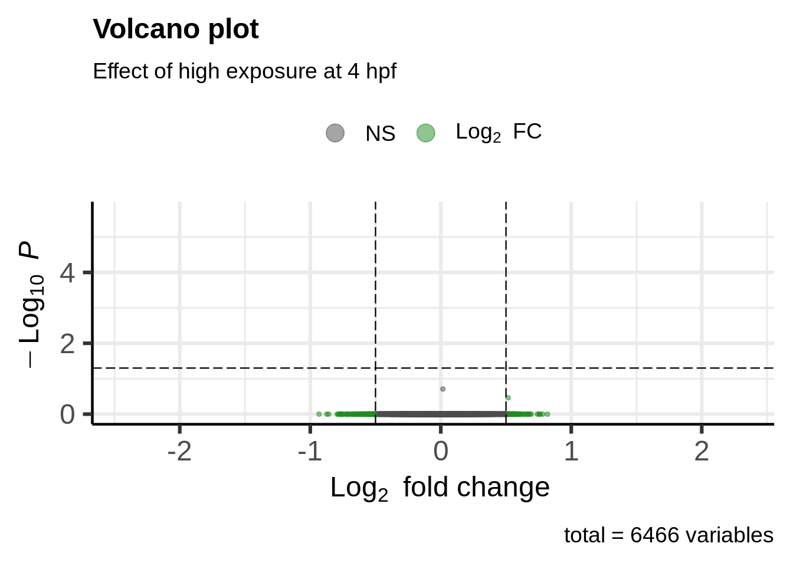
v4high <-
ggplot(res_4hpf_high) +
# Plot all
geom_point(aes(x=log2FoldChange, y=-log10(padj),color="unchanged"),
size=.5) +
# Overlay all significantly upregulated in red
geom_point(data = sig_4hpf_high[sig_4hpf_high$log2FoldChange > 0, ],
aes(x=log2FoldChange, y=-log10(padj), color="upregulated"),
size=.5) +
# Overlay all significantly downregulated in blue
geom_point(data = sig_4hpf_high[sig_4hpf_high$log2FoldChange < 0, ],
aes(x=log2FoldChange, y=-log10(padj), color="downregulated"),
size=.5) +
ggtitle("Effect of high leachate exposure at 4 hpf") +
xlab("log2 fold change") +
ylab("-log10 adjusted p-value") +
scale_x_continuous(limits = c(-2,2)) +
scale_y_continuous(limits = c(0,100)) +
scale_color_manual(values = c("unchanged" = "darkgrey", "upregulated" = "red", "downregulated" = "blue"),
labels = c("unchanged" = "Unchanged", "upregulated" = "Upregulated", "downregulated" = "Downregulated"),
name = NULL) +
theme(legend.position = "top",
plot.title = element_text(size = rel(1.5), hjust = 0.5),
axis.title = element_text(size = rel(1.25)))
v4high7.7 Effect of mid exposure at 4 hpf
# output results of contrast
res_4hpf_mid <- (results(dds, name = "leachate_mid_vs_control")
)
summary(res_4hpf_mid)
out of 6466 with nonzero total read count
adjusted p-value < 0.1
LFC > 0 (up) : 0, 0%
LFC < 0 (down) : 0, 0%
outliers [1] : 0, 0%
low counts [2] : 0, 0%
(mean count < 199)
[1] see 'cooksCutoff' argument of ?results
[2] see 'independentFiltering' argument of ?results7.7.1 Extract significant genes
# Convert results table into tibble
res_4hpf_mid_tb <- res_4hpf_mid %>%
data.frame() %>%
rownames_to_column(var="gene") %>%
as_tibble()
# subset that table to only keep the significant genes using our pre-defined thresholds:
sig_4hpf_mid_noLFCcutoff <- res_4hpf_mid_tb %>%
filter(padj < padj.cutoff)
sig_4hpf_mid <- sig_4hpf_mid_noLFCcutoff %>%
filter(abs(log2FoldChange) > lfc.cutoff)paste("Number of significant DEGs 4 hpf at mid exposure level:", nrow(sig_4hpf_mid_noLFCcutoff), "(padj<", padj.cutoff, ")")[1] "Number of significant DEGs 4 hpf at mid exposure level: 0 (padj< 0.05 )"paste("Number of significant DEGs 4 hpf at mid exposure level:", nrow(sig_4hpf_mid), "(padj<", padj.cutoff, ", log-fold change >", lfc.cutoff, ")")[1] "Number of significant DEGs 4 hpf at mid exposure level: 0 (padj< 0.05 , log-fold change > 0.5 )"write_csv(sig_4hpf_mid, "../output/09_deg_multifactorial/sig_4hpf_mid.csv")
write_csv(sig_4hpf_mid_noLFCcutoff, "../output/09_deg_multifactorial/sig_4hpf_mid_noLFCcutoff.csv")7.7.2 Volcano plots
# shrink lfc for visualizations
res_4hpf_mid_ashr <- lfcShrink(dds, coef = 5 , type = "ashr")
plotMA(res_4hpf_mid)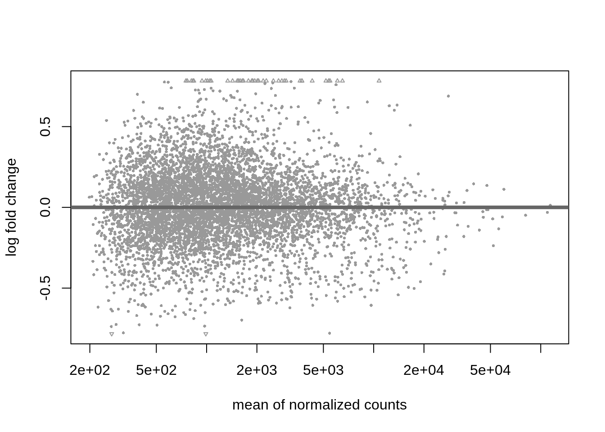
plotMA(res_4hpf_mid_ashr)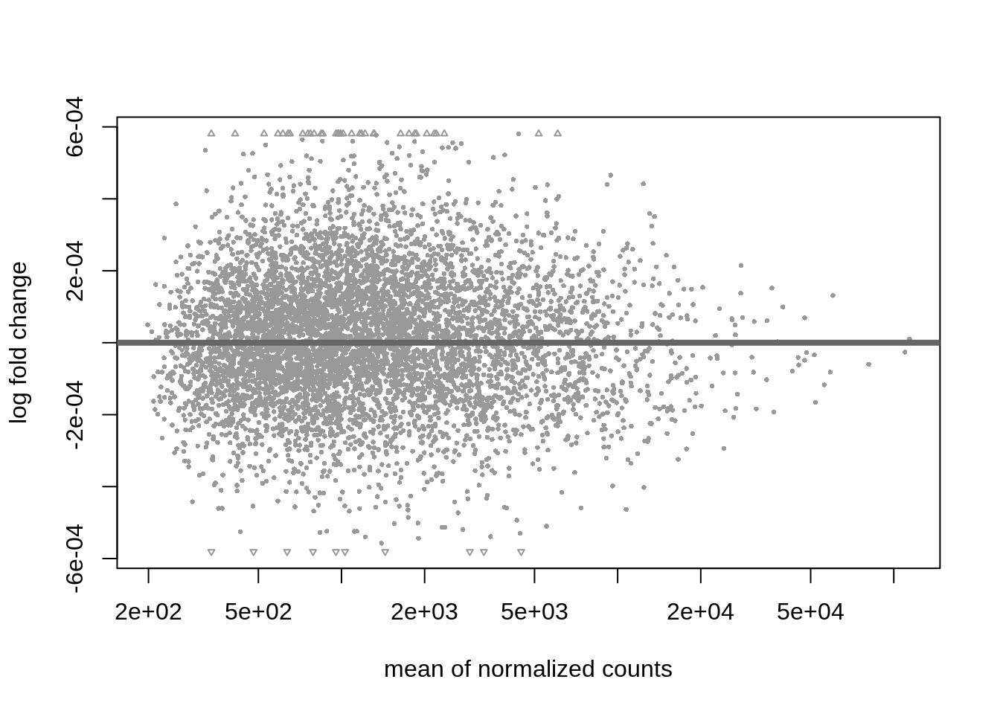
EnhancedVolcano(res_4hpf_mid,
lab = rownames(res_4hpf_mid),
x = 'log2FoldChange',
y = 'padj', # or 'padj' for adjusted p-values
pCutoff = 0.05,
FCcutoff = 0.5,
title = 'Volcano plot',
subtitle = 'Effect of mid exposure at 4 hpf',
pointSize = 1.0,
labSize = 3.0,
col = c('grey30', 'forestgreen', 'royalblue', 'red2')
)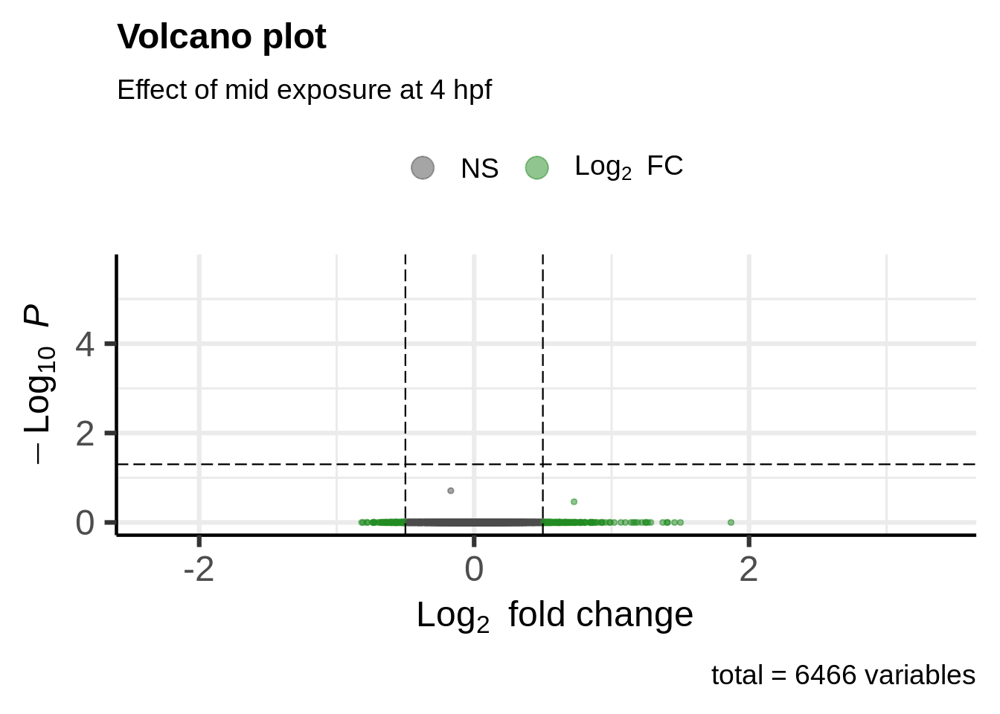
v4mid <-
ggplot(res_4hpf_mid) +
# Plot all
geom_point(aes(x=log2FoldChange, y=-log10(padj),color="unchanged"),
size=.5) +
# Overlay all significantly upregulated in red
geom_point(data = sig_4hpf_mid[sig_4hpf_mid$log2FoldChange > 0, ],
aes(x=log2FoldChange, y=-log10(padj), color="upregulated"),
size=.5) +
# Overlay all significantly downregulated in blue
geom_point(data = sig_4hpf_mid[sig_4hpf_mid$log2FoldChange < 0, ],
aes(x=log2FoldChange, y=-log10(padj), color="downregulated"),
size=.5) +
ggtitle("Effect of mid leachate exposure at 4 hpf") +
xlab("log2 fold change") +
ylab("-log10 adjusted p-value") +
scale_x_continuous(limits = c(-2,2)) +
scale_y_continuous(limits = c(0,100)) +
scale_color_manual(values = c("unchanged" = "darkgrey", "upregulated" = "red", "downregulated" = "blue"),
labels = c("unchanged" = "Unchanged", "upregulated" = "Upregulated", "downregulated" = "Downregulated"),
name = NULL) +
theme(legend.position = "top",
plot.title = element_text(size = rel(1.5), hjust = 0.5),
axis.title = element_text(size = rel(1.25)))
v4mid7.8 Effect of low exposure at 4 hpf
# output results of contrast
res_4hpf_low <- (results(dds, name = "leachate_low_vs_control", alpha=0.05)
)
summary(res_4hpf_low)
out of 6466 with nonzero total read count
adjusted p-value < 0.05
LFC > 0 (up) : 0, 0%
LFC < 0 (down) : 0, 0%
outliers [1] : 0, 0%
low counts [2] : 0, 0%
(mean count < 199)
[1] see 'cooksCutoff' argument of ?results
[2] see 'independentFiltering' argument of ?results7.8.1 Extract significant genes
# Convert results table into tibble
res_4hpf_low_tb <- res_4hpf_low %>%
data.frame() %>%
rownames_to_column(var="gene") %>%
as_tibble()
# subset that table to only keep the significant genes using our pre-defined thresholds:
sig_4hpf_low_noLFCcutoff <- res_4hpf_low_tb %>%
filter(padj < padj.cutoff)
sig_4hpf_low <- sig_4hpf_low_noLFCcutoff %>%
filter(abs(log2FoldChange) > lfc.cutoff)paste("Number of significant DEGs 4 hpf at low exposure level:", nrow(sig_4hpf_low_noLFCcutoff), "(padj<", padj.cutoff, ")")[1] "Number of significant DEGs 4 hpf at low exposure level: 0 (padj< 0.05 )"paste("Number of significant DEGs 4 hpf at low exposure level:", nrow(sig_4hpf_low), "(padj<", padj.cutoff, ", log-fold change >", lfc.cutoff, ")")[1] "Number of significant DEGs 4 hpf at low exposure level: 0 (padj< 0.05 , log-fold change > 0.5 )"write_csv(sig_4hpf_low, "../output/09_deg_multifactorial/sig_4hpf_low.csv")
write_csv(sig_4hpf_low_noLFCcutoff, "../output/09_deg_multifactorial/sig_4hpf_low_noLFCcutoff.csv")7.8.2 Volcano plots
# shrink lfc for visualizations
res_4hpf_low_ashr <- lfcShrink(dds, coef = 4 , type = "ashr")
plotMA(res_4hpf_low)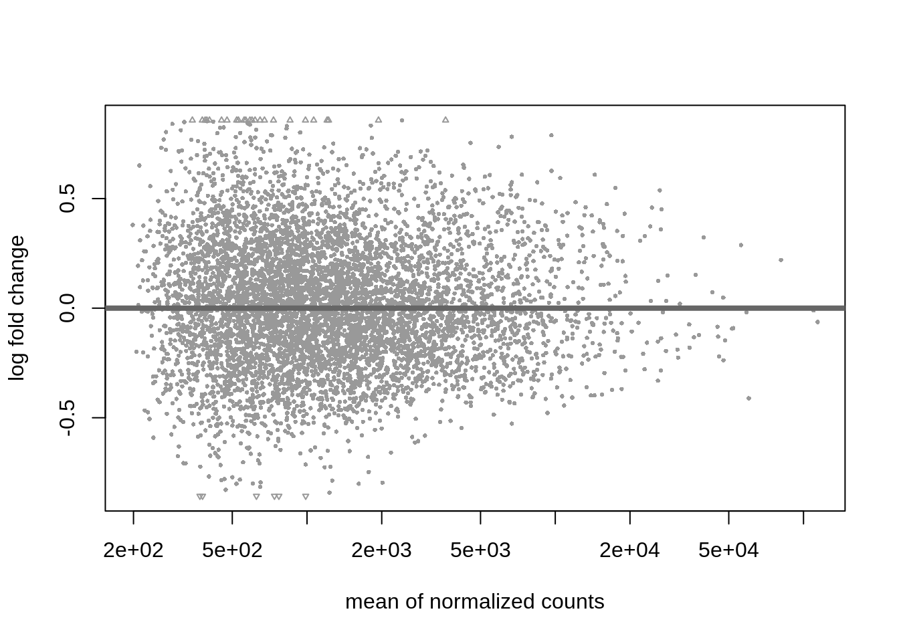
plotMA(res_4hpf_low_ashr)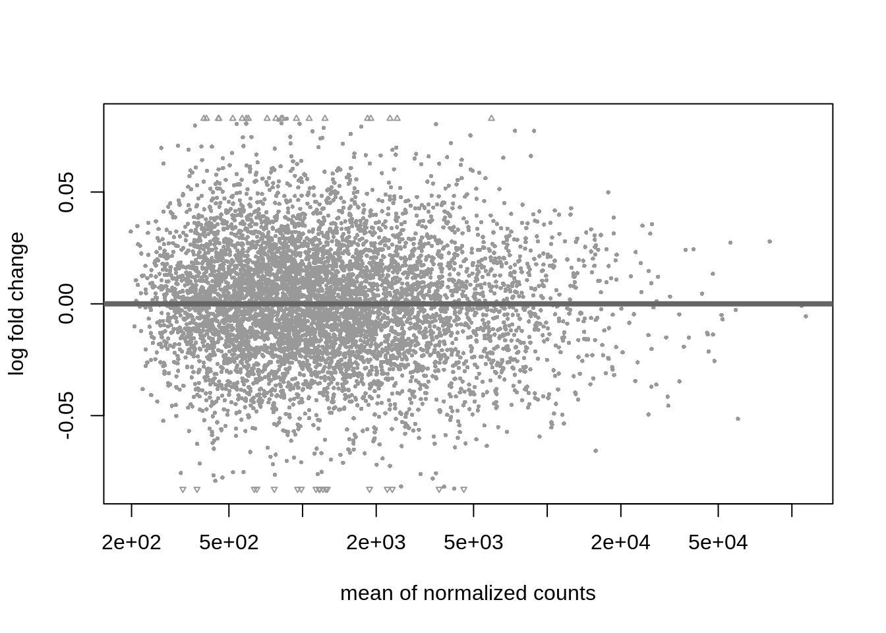
EnhancedVolcano(res_4hpf_low,
lab = rownames(res_4hpf_low),
x = 'log2FoldChange',
y = 'padj', # or 'padj' for adjusted p-values
pCutoff = 0.05,
FCcutoff = 0.5,
title = 'Volcano plot',
subtitle = 'Effect of low exposure at 4 hpf',
pointSize = 1.0,
labSize = 3.0,
col = c('grey30', 'forestgreen', 'royalblue', 'red2')
)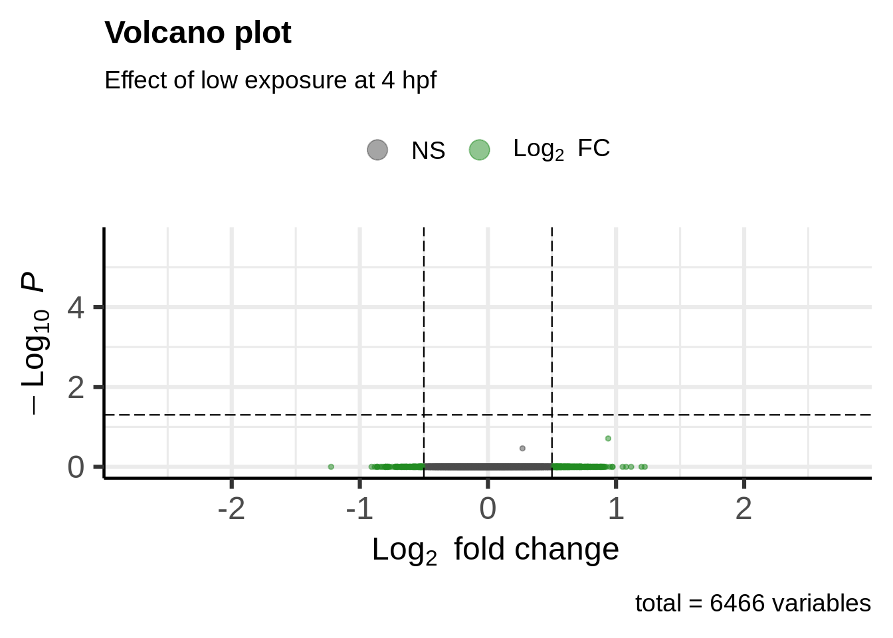
v4low <-
ggplot(res_4hpf_low) +
# Plot all
geom_point(aes(x=log2FoldChange, y=-log10(padj),color="unchanged"),
size=.5) +
# Overlay all significantly upregulated in red
geom_point(data = sig_4hpf_low[sig_4hpf_low$log2FoldChange > 0, ],
aes(x=log2FoldChange, y=-log10(padj), color="upregulated"),
size=.5) +
# Overlay all significantly downregulated in blue
geom_point(data = sig_4hpf_low[sig_4hpf_low$log2FoldChange < 0, ],
aes(x=log2FoldChange, y=-log10(padj), color="downregulated"),
size=.5) +
ggtitle("Effect of low leachate exposure at 4 hpf") +
xlab("log2 fold change") +
ylab("-log10 adjusted p-value") +
scale_x_continuous(limits = c(-2,2)) +
scale_y_continuous(limits = c(0,100)) +
scale_color_manual(values = c("unchanged" = "darkgrey", "upregulated" = "red", "downregulated" = "blue"),
labels = c("unchanged" = "Unchanged", "upregulated" = "Upregulated", "downregulated" = "Downregulated"),
name = NULL) +
theme(legend.position = "top",
plot.title = element_text(size = rel(1.5), hjust = 0.5),
axis.title = element_text(size = rel(1.25)))
v4low8 Summary
8.1 Facet volcano plot
# First, strip labels from all individual ggplot objects
# (You can do this in a loop if the plots are in a list)
remove_labels <- function(p) {
p +
theme(
axis.title.x = element_blank(),
axis.title.y = element_blank(),
legend.position = "none",
plot.title = element_text(size = 8) # adjust title size here
)
}
# Example: if your plots are named v4control, v4low, etc.
plots <- list(
v4low, v9low, v14low,
v4mid, v9mid, v14mid,
v4high, v9high, v14high
)
plots_clean <- lapply(plots, remove_labels)
# Now plot in 3 rows × 3 columns
volcano_facet <- plot_grid(
plotlist = plots_clean,
nrow = 3,
ncol = 3,
labels = NULL,
label_size = 0,
align = "hv"
)
volcano_facet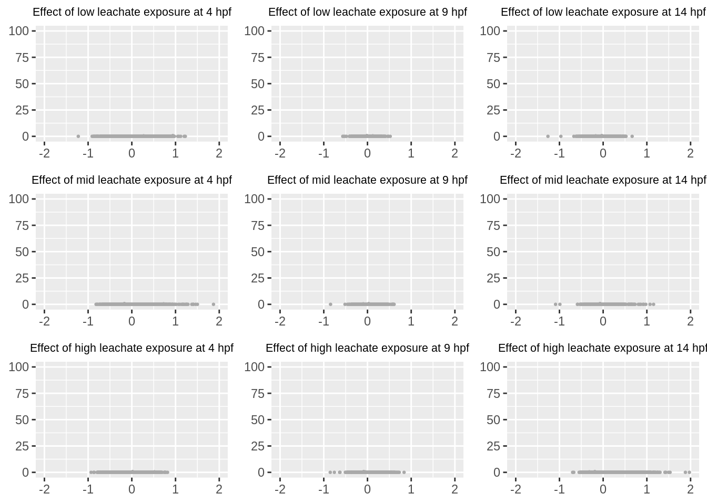
ggsave("../output/09_deg_multifactorial/volcano_facet.png", volcano_facet, width = 16, height = 12, dpi = 300)
Warning
Why do volcano plots not look like volcanos!?
Batch Effects or Low Biological Signal If your experimental design has confounding factors (e.g., batch effects), or the leachate treatment has low impact, then few genes will show strong changes.
Extreme p-values Your plot shows points with -log10(padj) values above 20–30. That means padj is very close to 0, which could indicate: - Very large sample size - Very consistent effect - Or something off with the dispersion estimate or p-value adjustment (e.g., if some genes had zero variance across groups)
9 Troubleshooting
9.1 Cooks distance
DESeq2 relies on the negative binomial distribution to make estimates and perform statistical inference on differences. While the negative binomial is versatile in having a mean and dispersion parameter, extreme counts in individual samples might not fit well to the negative binomial. For this reason, we perform automatic detection of count outliers. We use Cook’s distance, which is a measure of how much the fitted coefficients would change if an individual sample were removed (Cook 1977). For more on the implementation of Cook’s distance see the manual page for the results function. Below we plot the maximum value of Cook’s distance for each row over the rank of the test statistic to justify its use as a filtering criterion.